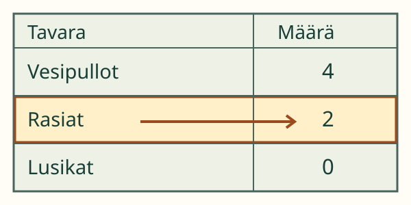

<link rel="stylesheet" href="lesson.css">
<section data-table-reader>

<section data-teaching-step="1" data-lesson-role="teaching-step">
<p> Loikka sai leikkiretken tavaralistan. Hän tarvitsee rasioiden määrän. Mistä sen löytää?</p>
<h2>Etsi nimi. Lue samalta riviltä.</h2>
<p><strong>Tavoitteesi:</strong> Löydät taulukosta kysytyn tiedon.</p>
<p>Taulukon otsikko kertoo, mistä lista on. Rivin nimi kertoo tavaran. Määrä-sarakkeessa lukee, montako sitä on merkitty.</p>
</section>


<section data-teaching-step="2" data-lesson-role="teaching-step">
<h3>1. Suurin luku ei vastaa joka kysymykseen</h3>
<figure data-lesson-role="worked-example"><figcaption>Kysymys on rasioista. Etsitään Rasiat-rivi ja luetaan sen määrä: 2.</figcaption></figure>
<p>Listan suurin luku on 4. Se kuuluu pulloille. Rasiakysymykseen vastataan <strong>2</strong>, ei suurimmalla luvulla.</p>
</section>


<section data-teaching-step="3" data-lesson-role="teaching-step">
<h3>2. Uusi lista, samat lukutavat</h3>
<table><caption>Keksitty luokan tarvikelista</caption><thead><tr><th scope="col">Tavara</th><th scope="col">Määrä</th></tr></thead><tbody><tr><th scope="row">Vihkot</th><td>3</td></tr><tr><th scope="row">Kansiot</th><td>Ei kirjattu</td></tr><tr><th scope="row">Kirjat</th><td>3</td></tr></tbody></table>
<p>Vihkoja on merkitty 3 ja kirjoja 3. Sama luku voi kuulua eri riveille. Kansioiden määrää ei ole kirjattu. <strong>Emme tiedä sitä tästä listasta.</strong></p>
<p>Retkilistan lusikoille on merkitty 0. Nolla kertoo, ettei lusikoita ole listan tarkistuksessa ollut. Puuttuva tieto ei ole nolla.</p>
</section>


<section data-teaching-step="4" data-lesson-role="teaching-step">
<p data-lesson-role="question"><strong>Ennusta:</strong> Jos Vihkot-rivi siirtyy alimmaiseksi, vaihtuuko sen määrä?</p>
<details data-lesson-role="answer"><summary>Katso ajatus</summary><p>Ei. Nimi ja määrä siirtyvät yhdessä. Lue aina nimi, älä pelkkää rivin paikkaa.</p></details>
</section>


<section data-teaching-step="5" data-lesson-role="teaching-step">
<div data-reader-practice hidden>
<h3>Lue listasta</h3>
<fieldset data-controls><legend>Taulukon lukupaja</legend><div data-audience-columns><div data-visual-column><p data-question></p>
<div data-reader-table></div>
<p>Voit halutessasi painaa rivin nimeä apuviivaksi. Se ei ole pakollista.</p></div><div data-response-column><div data-answers><button type="button" data-answer="0">0</button><button type="button" data-answer="1">1</button><button type="button" data-answer="2">2</button><button type="button" data-answer="3">3</button><button type="button" data-answer="4">4</button><button type="button" data-answer="unknown">Ei kirjattu</button></div>
<p data-feedback role="status" aria-live="polite">Katso kysymystä ja taulukon nimiä.</p>
<button type="button" data-action="question">Toinen kysymys</button>
<button type="button" data-action="reverse">Vaihda rivijärjestys</button>
<button type="button" data-action="table">Toinen taulukko</button></div></div></fieldset>
</div>
<details data-lesson-role="hint"><summary>Tarvitsen apua</summary><p>Peitä halutessasi muut rivit paperilla. Seuraa sormella kysytyn nimen riviä Määrä-sarakkeeseen. Lue vain siitä kohdasta.</p></details>
</section>


<section data-teaching-step="6" data-lesson-role="teaching-step">
<section data-lesson-role="question"><h2>Lisäpohdinta</h2><p>Rasioita on listalla 2 ja pulloja 4. Voiko tästä päätellä, kuinka monta lasta tulee retkelle?</p><details data-lesson-role="answer"><summary>Katso perustelu</summary><p>Ei varmasti. Taulukko kertoo tavaroista, ei lapsista.</p></details></section>
</section>

<details data-lesson-role="teacher-note"><summary>Opettajalle ja ilman ruutua</summary><p>Luokat 1–2. Esitietona M-DATA-03, taulukon rakenne. Oman taulukon tekeminen M-DATA-04 ei ole tämän KC:n pakollinen esitieto. Lue nimet tarvittaessa. Lukumerkkien tulkintaa tuetaan; laskeminen, erotusten lasku, yksiköt tai puheen vahvistaminen eivät ole harjoituksen vaatimuksia.</p><p>Lukekaa myös oikeaa, ymmärrettävästi otsikoitua luokan taulukkoa. Anna kysymys, jonka vastaus ei ole suurin luku. Harjoituksen rivivalinta on vapaaehtoinen tuki; oikea vastaus hyväksytään ilman sitä. Vastaus koskee vain annetun taulukon tietoa. Pelkkä vastaus ei osoita, seurasiko lapsi juuri kysytyn rivin nimeä tai käyttikö hän tiettyä lukustrategiaa. Se ei todenna itsenäistä tiedonkeruuta, rakentamista tai pysyvää osaamista. Esimerkkilistat ovat keksittyjä. Vastauksia ei tallenneta.</p></details>

<section data-teaching-step="7" data-lesson-role="teaching-step">
<p data-lesson-role="question"><strong>Lähtökysymys:</strong> Miksi taulukon rivien nimet kannattaa lukea?</p>
<details data-lesson-role="answer"><summary>Lähtökysymyksen ajatus</summary><p>Ne kertovat, mihin asiaan kunkin rivin tieto kuuluu.</p></details>
</section>

</section>
